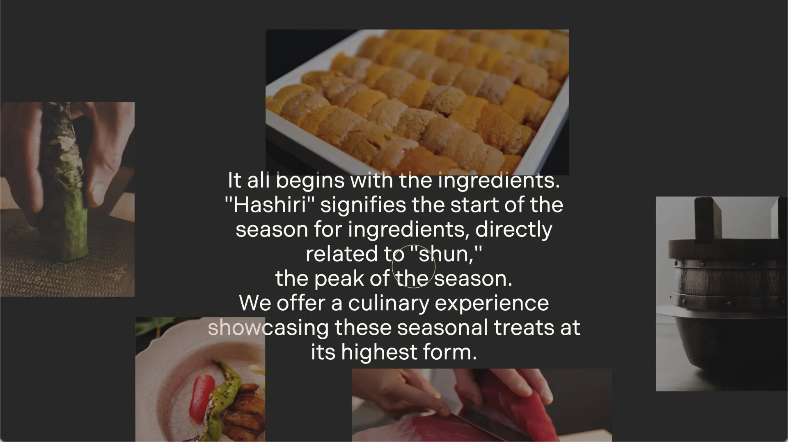
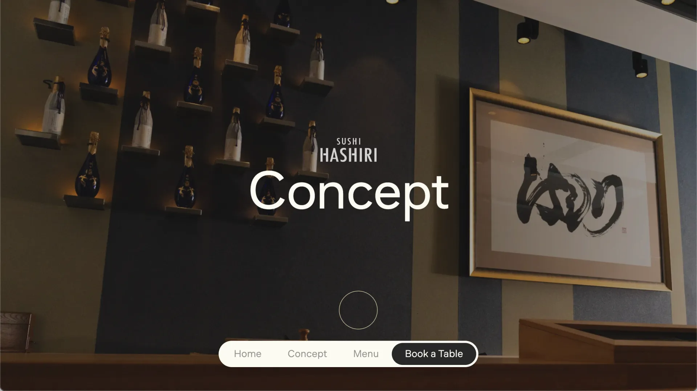

Hashiri San Francisco
Site Renewal — Art Direction & Frontend Development
Hashiri is a Michelin-starred omakase restaurant in San Francisco, owned by the CEO of Digital Garage. The existing site was a scroll-jacked single page — text-heavy, image-light, and carrying content that served the owner’s personal interests rather than a customer’s decision to book a table. I was given full creative freedom to renew it.
Context
Hashiri is a Michelin-starred omakase restaurant in San Francisco, owned by the CEO of Digital Garage. The existing site was a single long-page build with scroll jacking — heavy on text, light on imagery, and carrying content that served the owner’s personal interests rather than a customer’s decision to book a table. The brief was a renewal: make it modern, make it clean, and make it feel worthy of a Michelin-starred experience. I was given full creative freedom — trust built over eight years of consistent work.
Direction
Hashiri’s name refers to the start of a season for ingredients — the moment just before peak, when something is at its most anticipated. That gave me a clear editorial line: the site should feel like the food. Restrained, precise, and led by what’s on the plate.
The colour palette draws from traditional Japanese colours — deep muted tones that feel considered rather than decorative. Full-screen photography carries the content. Everything else gets out of the way. I split the original single long page into separate pages, then restructured the restaurant’s concept copy — which had arrived as a dense block of text — into five clear categories: About, Commitment, Eat, Drink, and Feel. Each section has a single job.
Key Decisions
Four decisions defined the renewal beyond the visual refresh.
01. Bottom Navigation Most restaurant sites put navigation at the top. I moved it to the bottom and made it scroll-aware — it disappears when the user scrolls down and reappears when they scroll up. The reasoning was simple: the photography is the product. A fixed bar sitting across the top of a full-screen food image competes with the thing the site is trying to sell. The bottom nav keeps wayfinding available without interrupting the visual experience.
02. Cutting the Art Content The existing site had descriptions of artwork displayed in the restaurant. The CEO is a collector and it reflected a personal interest. I removed it. A customer deciding whether to spend several hundred dollars on an omakase dinner is looking for one thing — confidence that the food and experience will be worth it. Art collection notes don’t answer that question. Removing them made space for content that does.
03. Instagram Embed A Michelin-starred restaurant lives and dies by its visual reputation. The Instagram feed brings the most current food photography onto the site without requiring anyone to update it manually. It keeps the site feeling alive between redesigns and gives customers a live window into what’s on the menu right now.
04. Art Direction The photography on the old site undersold the food. I found reference images that captured the tone I was after — close crops, dramatic lighting, ingredients as the subject — and briefed the US-based photographer remotely to match. The photography brief came before the layout, not after.
Design
The hero leads with the logo and a full-screen image slider — no text competing with the food. The Japanese wordmark sits quietly, the photography does the work. Traditional Japanese colour values run through the typography and UI details: warm off-whites, deep charcoal, muted earth tones. Nothing bright, nothing that pulls attention away from the imagery.
The hero copy — "it all begins with the ingredients" — is a direct reference to the restaurant’s name. Hashiri is the term for the first catch or first harvest of a season: the moment an ingredient is at its most anticipated. The line earns its place.
Build
Built with Vite and Tailwind CSS, with GSAP handling animations and Lenis for smooth scroll. Vanilla JS throughout — no framework overhead for a site that doesn’t need it. The scroll-aware bottom navigation uses scroll direction detection on the window, toggling visibility with a GSAP fade. The Instagram feed runs through Elfsight, keeping the implementation clean and maintenance-free on the client side.
Outcome
The site is live and serves as the primary web presence for a restaurant that has held Michelin recognition across three consecutive years. The photography-led approach and stripped-back content give it a presence that matches the quality of the experience inside.
Reflection
I’d have pushed to build out the Menu page more fully. It currently exists as a page but the content is thin — for a restaurant at this level, the menu is a major conversion moment. A customer on the fence about booking would be persuaded by seeing the detail and care that goes into each course. That page deserved more attention than it got.

